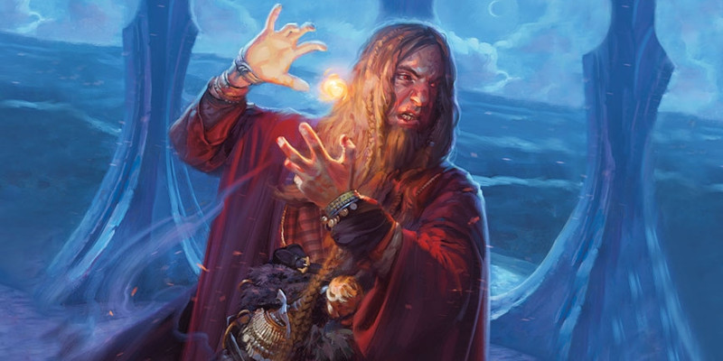

Origines magiques d'ensorceleur
Au niveau 1, un ensorceleur gagne la capacité Origine magique. Voici de nouvelles options d'origines :
- Élu divin
- Sorcellerie du phœnix
- Sorcellerie de la mer
- Sorcellerie de la pierre
- Âme du géant
- Âme du mécanisme
Élu divin (v2)
Parfois, l'étincelle de magie qui nourrit un ensorceleur provient d'une source divine qui brille au fond de son âme. Bénéficiant d'une telle âme privilégiée, votre magie innée pourrait prendre sa source dans un solide lien familial avec une entité divine. Votre aïeul était peut-être un ange, transformé en créature mortelle et envoyé pour combattre au nom d'un dieu. Ou votre naissance coïncide avec une ancienne prophétie vous déclarant le serviteur des dieux ou le vaisseau désigné d'une magie divine. Les élus divins, grâce à leur magnétisme naturel et leur forte personnalité, sont souvent considérés comme une menace par les hiérarchies religieuses traditionnelles. En tant qu'esprit libre qui commande la puissance des dieux, ces ensorceleurs peuvent saper l'ordre établi et proclamer un lien direct avec le divin. Au sein de certaines cultures, seuls ceux qui possèdent les pouvoirs d'un élu divin peuvent commander le pouvoir religieux. Dans ces territoires, les fonctions ecclésiastiques sont dominées par quelques lignées et sont préservées d'une génération à l'autre.
Magie divine
Votre lien avec le divin vous permet d'apprendre des sorts normalement associés à la classe de clerc. Lorsque votre aptitude de lanceur de sorts vous permet d'apprendre un sort mineur ou un sort d'ensorceleur de niveau 1 et plus, vous pouvez choisir ce nouveau sort dans la liste de sorts de clerc, en plus de celle d'ensorceleur. Par ailleurs, vous devez vous conformer à toutes les restrictions associées au sort, qui devient un sort d'ensorceleur pour vous.
Vous apprenez également le sort soins, qui ne compte pas dans votre nombre de sorts s'ensorceleur connus.
Élu des dieux
À partir du niveau 1, la puissance divine protège votre destinée. Si vous ratez un jet de sauvegarde ou un jet d'attaque, vous pouvez lancer 2d4 et ajouter le résultat au total, pouvant ainsi causer un dénouement différent. Une fois utilisée, vous ne pouvez plus utiliser cette capacité de nouveau avant d'avoir terminé un repos court ou long.
Soins puissants
À partir du niveau 6, l'énergie céleste qui parcoure vos veines peut renforcer votre magie de guérison. Chaque fois que vous lancez des dés pour déterminer le nombre de points de vie qu'un de vos sorts d'ensorceleur rétablit, vous pouvez dépenser 1 point de sorcellerie pour relancer une fois tous les dés que vous souhaitez.
Apparence angélique
Au niveau 14, votre essence divine provoque chez vous une transformation physique mineure. Vous présentez une apparence qui est une version surréelle d'une des qualités suivantes de votre choix : la beauté, la jeunesse, la gentillesse ou une présence imposante.
De plus, par une action bonus, vous pouvez faire pousser dans votre dos une paire d'ailes spectrales. Les ailes persistent jusqu'à ce que vous soyez incapable d'agir ou que vous décidiez de les faire disparaître par action bonus. Lorsque les ailes sont présentes, vous avez une vitesse de vol de 9 mètres.
Prodigieuse récupération
Au niveau 18, vous obtenez la capacité de surmonter les blessures les plus graves. Au prix d'une action bonus lorsqu'il vous reste moins de la moitié de vos points de vie, vous pouvez récupérer un nombre de points de vie équivalent à la moitié de votre maximum de points de vie. Une fois utilisée, vous ne pouvez plus utiliser cette capacité de nouveau avant d'avoir terminé un repos long.
Sorcellerie du phœnix
Votre puissance se nourrit de la flamme immortelle à l'origine du légendaire phœnix. Vous ou vos ancêtres ont possiblement rendu un grand service à un phœnix ou bien vous êtes né en sa présence. Quelle que soit la cause, une parcelle de la puissance du phœnix réside en vous. Cette puissance est une bénédiction mitigée. Telle la créature mythique, vous pouvez invoquer une énergie flamboyante et obtenir la capacité de tromper la mort. Mais cette puissance a un coût. Le feu crépite en vous et demande à être libéré. Vous vous surprenez parfois à alimenter des flammes et vous ne supportez pas de voir un feu s'éteindre. Vous êtes par contre à l'aise avec une torche allumée à la main ou assis devant un feu de camp, mais ce don ne vous offre aucune protection contre le feu. Et vous êtes aussi vulnérable à la magie flamboyante, même la vôtre, que toute autre créature. Les ensorceleurs du phœnix peuvent employer leurs pouvoirs pour s'extirper des doigts de la mort, et bien souvent c'est leur propre nature imprudente ou leur dépendance à une magie destructrice qui les a placés dans cette situation. De tels ensorceleurs sont itinérants par obligation, car la nature volatile de leur magie rend les autres nerveux. Si un feu se déclare dans une ville, l'ensorceleur du phœnix ferait mieux de filer, qu'il soit coupable ou non. Le feu est une force dangereuse et les ensorceleurs du phœnix ont la réputation (méritée ou non) d'agir sans considération, confiant que l'essence du phœnix les sauvera.
| d6 | Particularité |
| 1 | Vous allumez nonchalamment de petits feux qui s'éteignent rapidement. |
| 2 | Vous gloussez comme un fiélon lorsque vous libérez la fureur de vos sorts de feu. |
| 3 | Vous éprouvez de l'admiration pour le feu, même s'il consume vos amis. |
| 4 | Votre peau est couverte de brûlures qui rappellent la première fois que vos pouvoirs se sont manifestés. |
| 5 | Vous préférez votre nourriture calcinée. |
| 6 | Votre bravoure frôle la témérité. |
Enflammer
Au niveau 1, vous obtenez la capacité d'allumer une flamme d'un simple toucher. Au prix d'une action, vous pouvez enflammer magiquement un objet que vous touchez avec votre main, comme une torche, de l'amadou ou le bord d'une tapisserie.
Manteau de flammes
À partir du niveau 1, vous pouvez libérer le feu du phœnix qui brûle en vous. Au prix d'une action bonus, vous vous enveloppez magiquement de flammes tourbillonnantes tandis que vos yeux brillent comme des charbons ardents. Pendant 1 minute, vous obtenez les avantages suivants :
- Vous émettez une lumière vive dans un rayon de 9 mètres et une lumière faible sur 9 mètres supplémentaires.
- Toute créature qui vous touche ou qui vous atteint avec une attaque de corps à corps en étant à 1,50 mètre ou moins de vous subit des dégâts de feu égaux à votre modificateur de Charisme.
- À chaque fois que vous lancez des dégâts de feu à votre tour, vous y ajoutez un bonus égal à votre modificateur de Charisme.
Une fois utilisée, vous ne pouvez plus utiliser cette capacité de nouveau avant d'avoir terminé un repos long.
Étincelle du phœnix
À partir du niveau 6, l'énergie flamboyante qui vous habite devient de plus en plus agitée et vindicative. Dans l'éventualité d'une défaite, un rugissement se fait entendre lorsqu'elle se propulse hors de vous afin de vous protéger. Si vous atteignez 0 point de vie, vous pouvez utiliser votre réaction pour vous en remettre à l'étincelle du phœnix. Vous disposez alors de 1 point de vie et chaque créature à 3 mètres ou moins de vous subit des dégâts de feu égaux à la moitié de votre niveau d'ensorceleur + votre modificateur de Charisme. Si vous utilisez cette capacité alors que vous êtes sous l'effet du Manteau de flammes, elle inflige plutôt des dégâts de feu égaux à votre niveau d'ensorceleur + le double de votre modificateur de Charisme, et votre Manteau de flammes prend fin immédiatement. Une fois utilisée, vous ne pouvez plus utiliser cette capacité de nouveau avant d'avoir terminé un repos long.
Feu nourricier
À partir du niveau 14, vos sorts de feu vous confortent et vous restaurent. Lorsque vous dépensez un emplacement de sort pour lancer un sort qui inclut un lancer de dégâts de feu, vous récupérez des points de vie équivalents au niveau de l'emplacement du sort + votre modificateur de Charisme.
Aspect du phœnix
Au niveau 18, vous contrôlez finalement l'étincelle de feu qui danse en vous. Lorsque vous êtes sous les effets du Manteau de flammes, vous obtenez des avantages supplémentaires :
- Vous disposez d'une vitesse de vol de 12 mètres et vous pouvez faire du vol stationnaire.
- Vous résistez à tous les types de dégâts.
- Si vous utilisez l'Étincelle du phœnix, cette aptitude inflige 20 dégâts de feu supplémentaires à chaque créature.
Sorcellerie de la mer
Le pouvoir de l'eau se définit par la force de sa souplesse, par sa résilience et par sa nature implacable. Les eaux se fendent pour permettre le mouvement d'un navire ou l'entrée d'un plongeur sans que leur passage ne laisse aucune trace. L'eau qui dévale la montagne parvient à la mer. Même si elle peut emprunter de nombreux détours par monts et par vaux, elle retourne lentement mais sûrement jusqu'aux vagues. Ceux dont l'âme est touchée par la puissance de l'élément aqueux dominent une puissance toute aussi grande. Votre héritage est lié aux puissantes créatures de la mer, comme les néréides, les seigneurs des hommes-poissons ou les puissances élémentaires. Comme une rivière, vous ressentez l'attrait de l'océan. L'appel est omniprésent et votre quiétude est troublée tant que vous êtes loin de la mer.
Âme de la mer
Au niveau 1, votre lien avec la mer vous octroie la capacité de respirer sous l'eau. De plus, vous disposez d'une vitesse de nage égale à votre vitesse de marche.
Malédiction de la mer
Lorsque vous optez pour cette origine au niveau 1, vous êtes initié au secret qui permet d'imprégner vos sorts d'une malédiction aqueuse. Lorsque vous touchez une créature avec l'attaque d'un sort mineur ou lorsqu'une créature échoue à son jet de sauvegarde contre votre sort mineur, vous pouvez maudire la cible jusqu'à la fin de votre prochain tour ou jusqu'à ce que vous maudissiez une créature différente par l'entremise de cette capacité. Une fois par tour, lorsque vous lancez un sort, vous pouvez libérer la malédiction si le sort inflige à la cible des dégâts de froid ou de foudre ou si elle est forcée de se déplacer. La cible subit alors les effets supplémentaires suivants et la malédiction prend fin si le sort n'est pas mineur. Vous devez faire un seul choix si plus d'un effet s'applique.
Dégâts de froid. Si la cible affectée subit des dégâts de froid causés par votre sort, la vitesse de la cible est aussi réduite de 4,50 mètres jusqu'à la fin de votre prochain tour. Si le sort réduisait déjà la vitesse de la cible, appliquez la plus grande des réductions.
Dégâts de foudre. Si la cible affectée subit des dégâts de foudre causés par votre sort, ces dégâts sont augmentés à hauteur de votre modificateur de Charisme.
Mouvement forcé. Si la cible est déplacée grâce à votre sort, augmentez la distance du déplacement de 4,50 mètres.
Défense liquide
Au niveau 6, vous bénéficiez de la résistance aux dégâts de feu. Vous obtenez aussi la capacité de vous défendre en adoptant temporairement un aspect liquide. Au prix d'une réaction, lorsque vous êtes atteint par une attaque qui inflige des dégâts contondants, perforants ou tranchants, vous pouvez réduire ces dégâts d'une quantité égale à votre niveau d'ensorceleur + votre valeur de Charisme. Puis vous pouvez vous déplacer jusqu'à 9 mètres sans provoquer d'attaque d'opportunité. Une fois que vous avez utilisé cette réaction spéciale, vous ne pouvez plus l'utiliser avant d'avoir terminé un repos court ou long.
Forme fluide
À partir du niveau 14, vous obtenez la capacité de vous liquéfier pendant vos mouvements. Lorsque vous vous déplacez à votre tour, vous ne subissez que la moitié des dégâts causés par les attaques d'opportunité. De plus, vous pouvez vous déplacer à travers l'espace d'un ennemi mais sans pouvoir vous y arrêter volontairement. À votre tour, vous pouvez vous faufiler dans un espace d'au moins 7,50 centimètres de diamètre sans que vous y soyez à l'étroit. Lorsque vous arrêtez votre déplacement, les règles d'étroitesse s'appliquent si vous vous trouvez dans un espace un cran plus petit que votre taille. Vous ne pouvez pas vous arrêter volontairement dans un espace encore plus petit. Si vous êtes forcé de le faire, vous vous écoulez immédiatement dans le plus proche espace pouvant vous contenir, le long du trajet que vous venez de parcourir.
Âme d'eau
À partir du niveau 18, votre être se transforme grâce à la puissance de la mer. Vous obtenez les avantages suivants :
- Vous n'avez plus besoin de boire, de manger ou de dormir.
- Un coup critique qui vous cible devient un coup normal.
- Vous obtenez la résistance contre les dégâts contondants, perforants et tranchants.
Sorcellerie de la pierre
Votre magie vient d'un lien mystique entre votre âme et la magie de la terre élémentaire. Vous pourriez avoir un ancêtre éloigné originaire du plan de la Terre, ou votre famille a peut-être gagné une grande bénédiction en échange d'un service rendu aux seigneurs dao. Quel que soit votre passé, vous dominez la magie de la terre. Votre lien avec la magie de la terre vous accorde une résistance extraordinaire, et les ensorceleurs de pierre ont une affinité naturelle pour le combat. Une lame d'acier ressemble à un prolongement naturel de votre corps, et les ensorceleurs de cette origine ont un don pour brandir à la fois des boucliers et des armes. Au combat, votre place est au milieu de la mêlée. Vous comptez sur votre nature élémentaire pour vous protéger contre les dégâts et sur vos armes magiques et métalliques pour vaincre vos ennemis.
Maîtrises supplémentaires
Au niveau 1, vous gagnez la maîtrise des boucliers, des armes courantes et des armes de guerre.
Magie du métal
Votre affinité pour le métal vous donne la possibilité d'apprendre quelques sorts qui ne sont pas des sorts d'ensorceleur et qui se concentrent sur les attaques avec une arme. Lorsque votre niveau vous permet d'apprendre un sort de niveau 1 ou supérieur, vous pouvez sélectionner le sort dans la liste suivante de sorts, en plus de la liste de sorts d'ensorceleur. Vous devez par ailleurs obéir à toutes les restrictions pour choisir le sort, qui devient un sort d'ensorceleur pour vous.
| Niveau de sort |
Sort |
| 1 | duel forcé |
| 1 | châtiment calcinant |
| 1 | châtiment tonitruant |
| 1 | châtiment courroucé |
| 2 | châtiment révélateur |
| 2 | arme magique |
| 3 | châtiment aveuglant |
| 3 | arme élémentaire |
| 4 | châtiment débilitant |
Résistance de la pierre
Au niveau 1, votre connexion avec la pierre vous donne plus de force. Votre maximum de points de vie augmente de 1, et également à chaque fois que vous gagnez un niveau dans cette classe. Par une action, vous pouvez obtenir une CA de 13 + votre modificateur de Constitution si vous ne portez pas d'armure, et votre peau prend un aspect rocailleux. Cet effet dure jusqu'à ce que vous y mettiez fin par une action bonus, que vous soyez incapable d'agir, ou si vous revêtez une armure autre qu'un bouclier.
Égide de pierre
À partir du niveau 6, votre emprise sur la magie de la terre se renforce, vous permettant de l'exploiter pour la protection de vos alliés. Par une action bonus, vous pouvez accorder une égide à une créature alliée que vous pouvez voir à 18 mètres ou moins de vous. L'égide est une aura gris foncé de magie de la terre qui protège la cible. Les dégâts contondants, perforants et tranchants infligés à la cible sont réduits de 2 + votre niveau d'ensorceleur divisé par 4. Cet effet dure 1 minute, jusqu'à ce que vous l'utilisiez de nouveau ou jusqu'à ce que vous soyez incapable d'agir. En outre, quand une créature que vous pouvez voir à 18 mètres ou moins de vous touche la cible protégée avec une attaque au corps à corps, vous pouvez utiliser votre réaction pour vous téléporter dans un espace inoccupé que vous pouvez voir à 1,50 mètre ou moins de l'attaquant. Vous ne pouvez vous téléporter que si vous et l'attaquant êtes sur la même surface. Vous pouvez alors faire une attaque au corps à corps avec une arme contre l'attaquant. Si cette attaque touche, elle inflige 1d10 dégâts de force supplémentaires. Ces dommages supplémentaires passent à 2d10 au niveau 11 et à 3d10 au niveau 17.
Bout de roche
À partir du niveau 14, votre maîtrise de la magie de la terre vous permet d'ajouter la force de la terre élémentaire à vos sorts. Lorsque vous lancez un sort qui inflige des dégâts, choisissez une créature blessée par ce sort durant le round où vous l'avez lancé. Cette créature prend des dégâts de force supplémentaires égaux à la moitié de votre niveau d'ensorceleur. Cette capacité ne peut être utilisée qu'une seule fois par lancement d'un sort.
Égide de la Terre
Au niveau 18, lorsque vous utilisez l'Égide de pierre pour protéger un allié, vous pouvez choisir jusqu'à trois créatures qui en obtiendront les bénéfices.
Âme du géant
Autrefois, les géants vivaient dans un fabuleux royaume connu sous le nom d'Ostoria, un paradis pour ses habitants qui reflétait leur maîtrise du monde des mortels. Puis Ostoria déclina et les géants furent dispersés et défaits. Lors de cette époque mythique, les géants accordèrent un fragment de leur grande puissance à une poignée d'élus choisis parmi le petit peuple, mais ces personnes choyées furent emportées par la même tragédie qui accabla Ostoria. Depuis, elles se sont dispersées à travers les nombreux mondes du multivers et de temps à autre, le don des géants se manifeste chez un des leurs descendants, leur octroyant une source de magie qui leur permet de commander les éléments et d'obtenir la puissance d'un géant.
Résistance de Jotun
La résistance des géants imprègne votre corps. Au niveau 1, votre maximum de points de vie augmente de 1 et il augmente à nouveau de 1 chaque fois que vous gagnez un niveau dans cette classe.
Marque de l'Ordning
Au niveau 1, vous découvrez en vous-même des capacités innées pour la magie qui repose sur votre héritage de géant. Choisissez un des types de géant dans la table ci-dessous. Aux niveaux 1 et 3, vous apprenez les sorts associés au type de votre choix, comme indiqué dans la table. Ces sorts sont considérés comme des sorts d'ensorceleur pour vous, mais ils ne sont pas comptabilisés dans le nombre de sorts que vous connaissez.
| Type de géant | Sorts au niveau 1 | Sort au niveau 3 |
| Géant des nuages | nappe de brouillard, illusion mineure | invisibilité |
| Géant du feu | mains brûlantes, trait de feu | sphère de feu |
| Géant du givre | armure d'Agathys, rayon de givre | immobilisation de personne |
| Géant des collines | héroïsme, gourdin magique | agrandissement/rapetissement |
| Géant des pierres | enchevêtrement, résistance | croissance d'épines |
| Géant des tempêtes | poigne électrique, vague tonnante | bourrasque |
Âme de l'Ostoria perdue
À partir du niveau 6, vous obtenez un bénéfice à chaque fois que vous incantez un sort octroyé par votre capacité Marque de l'Ordning.
Géant des nuages. Immédiatement après avoir lancé un de vos sorts de la Marque d'Ordning, vous pouvez vous téléporter magiquement au prix d'une action bonus. Vous vous téléportez dans un espace inoccupé que vous pouvez voir et qui est situé à une distance en mètre égale ou inférieure à 3 + (votre modificateur de Constitution x 0,3).
Géant du feu. Vous obtenez un bonus aux jets de dégâts infligés par les sorts de votre Marque d'Ordning égal à votre modificateur de Constitution (minimum 1).
Géant du givre. Immédiatement après avoir lancé un de vos sorts de la Marque d'Ordning, vous obtenez des points de vie temporaires équivalents à votre modificateur de Constitution (minimum 1). Toutefois, si le sort est armure d'Agathys, vous augmentez plutôt les points de vie temporaires obtenus par le sort d'une valeur égale à votre modificateur de Constitution (minimum 1).
Géant des collines. Immédiatement après avoir lancé un de vos sorts de la Marque d'Ordning, vous pouvez cibler jusqu'à deux créatures visibles situées à 1,50 mètre ou moins de vous. Chaque cible doit réussir un jet de sauvegarde de Force opposé au DD de sauvegarde de vos sorts, sans quoi elle est repoussée d'un nombre de mètres équivalent à 1,50 + (votre modificateur de Constitution (minimum +1) x 0,3). La cible peut choisir de volontairement rater la sauvegarde.
Géant des pierres. Immédiatement après avoir lancé un de vos sorts de la Marque d'Ordning, vous obtenez un bonus à la CA égal à votre modificateur de Constitution (minimum +1) jusqu'à la fin de votre prochain tour.
Géant des tempêtes. Immédiatement après avoir lancé un de vos sorts de la Marque d'Ordning, jusqu'à trois créatures que vous pouvez voir et qui sont situées à 9 mètres ou moins de vous subissent des dégâts de foudre équivalents à votre modificateur de Constitution (minimum 1).
Rage de l'Ostoria déchue
À partir du niveau 14, vous obtenez la faculté de canaliser l'âme de vos ancêtres dans votre physionomie. Lorsque, à votre tour, vous entamez l'incantation d'un sort d'ensorceleur qui consomme un emplacement de sort, vous pouvez augmenter votre catégorie de taille d'un cran, de taille M à G par exemple. Cette augmentation dure 1 minute. Elle cesse prématurément si vous mourrez ou si vous êtes incapable d'agir. Jusqu'à ce que l'effet se termine, vous obtenez les avantages suivants :
- Vos points de vie actuels et votre maximum de points de vie augmentent de 1 par niveau d'ensorceleur.
- Votre allonge augmente de 1,50 mètre.
- Votre vitesse de marche augmente de 1,50 mètre.
- Vous avez un avantage à vos jets de sauvegarde de Force et aux jets de Force.
- Vous obtenez un bonus aux dégâts pour vos attaques au corps à corps avec une arme égal à votre modificateur de Constitution (minimum +1).
Lorsque vous utilisez cette capacité, vous ne pouvez plus y recourir avant d'avoir terminé un repos court ou long.t.
Bénédiction du Père de Tout
Au niveau 18, votre valeur de Constitution augmente de 2, jusqu'à un maximum de 22. De plus, vous pouvez utiliser Rage de l'Ostoria déchue deux fois entre les repos, mais pas plus d'une fois par tour. Si vous utilisez cette capacité alors que vous êtes déjà sous son effet, les augmentations de taille, de points de vie, d'allonge et de vitesse de marche sont cumulatives.
Âme du mécanisme
Méchanus est un plan de l'ordre et un royaume supervisé par une entité divine appelée Primus, dont les pensées et les calculs sont vastes et impénétrables. Vous, ou quelqu'un de votre lignée, pourriez avoir été empêtré dans l'une des machinations du seigneur des modrons. Peut-être avez-vous été exposé à un artefact créé par Primus, ou votre ancêtre a participé à la Grande marche des modrons d'une manière ou d'une autre. Le pouvoir de Méchanus peut sembler étrange et surnaturel aux yeux des autres, mais pour vous il fait simplement partie d'un vaste système glorieux que les autres ne peuvent pas comprendre. Si vous le désirez, vous pouvez choisir ou déterminer au hasard sur la table ci-dessous de quelle manière votre connexion avec le plan se manifeste lorsque vous lancez un sort.
| d6 | Manifestation de Méchanus |
| 1 | De grandes roues dentées et spectrales semblent planer derrière vous. |
| 2 | Les aiguilles d'une horloge apparaissent dans vos yeux. |
| 3 | Votre peau brille d'un éclat doré et métallique. |
| 4 | Des angles anormaux apparaissent sur vos affaires, comme des objets géométriques. |
| 5 | Votre focaliseur prend la forme d'une Pierre de frai ou d'une autre création de Primus. |
| 6 | Les créatures affectées par votre magie et vous-même entendez la sonnerie d'une horloge. |
Magie du mécanisme
Capacité d'âme du mécanisme de niveau 1
Vous apprenez des sorts supplémentaires lorsque vous atteignez certains niveaux dans cette classe, comme indiqué dans le tableau ci-dessous. Vous considérez chacun de ces sorts comme un sort d'ensorceleur, mais ils ne comptent pas dans le nombre de sorts d'ensorceleur que vous connaissez. Ces sorts ne peuvent pas être remplacés lorsque vous gagnez un niveau dans cette classe.
| Niveau d'ensorceleur |
Sorts |
| 1 | alarme, protection contre le mal et le bien |
| 3 | sens des pièges, métal brûlant |
| 5 | contresort, glyphe de protection |
| 7 | œil magique, sphère résiliente d'Otiluke |
| 9 | animation d'objets, mur de force |
Rétablissement d'équilibre
Capacité d'âme du mécanisme de niveau 1
Votre connexion avec le plan d'un ordre absolu vous permet d'amortir les moments chaotiques. Lorsqu'une créature que vous pouvez voir dans un rayon de 18 mètres autour de vous est sur le point de lancer un d20 avec un avantage ou un désavantage, vous pouvez utiliser votre réaction pour éviter que le jet ne soit affecté par un avantage ou un désavantage. Vous pouvez utiliser cette capacité un nombre de fois égal à votre modificateur de Charisme (minimum une fois), et vous récupérez toutes les utilisations dépensées lorsque vous terminez un repos long.
Rempart de la loi
Capacité d'âme du mécanisme de niveau 6
Vous pouvez imprégner une créature d'un bouclier scintillant d'ordre. Par une action, vous pouvez dépenser de 1 à 5 points de sorcellerie pour créer une protection magique autour de vous ou d'une autre créature que vous pouvez voir dans un rayon de 9 mètres autour de vous. La protection dure jusqu'à ce que vous terminiez un repos long ou jusqu'à ce que vous utilisiez à nouveau cette capacité. La protection est représentée par un nombre de d8 égal au nombre de points de sorcellerie dépensés pour la créer. Lorsque la créature protégée subit des dégâts, elle peut utiliser sa réaction pour dépenser un certain nombre de ces dés, les lancer et réduire les dégâts subis du total des dés dépensés.
Transe de l'ordre
Capacité d'âme du mécanisme de niveau 14
Vous gagnez la capacité d'entrer dans un état de conscience du mécanisme par une action bonus. Pendant la minute suivante, les jets d'attaque contre vous ne peuvent pas bénéficier d'un avantage, et chaque fois que vous effectuez un jet d'attaque, de caractéristique ou de sauvegarde, vous pouvez traiter un résultat de 9 ou moins comme un 10. Une fois que vous avez utilisé cette action, vous ne pouvez pas l'utiliser de nouveau avant d'avoir terminé un repos long ou d'avoir dépensé 5 points de sorcellerie pour pouvoir l'utiliser de nouveau.
Cavalcade du mécanisme
Capacité d'âme du mécanisme de niveau 18
Vous invoquez des esprits de l'ordre pour rétablir l'équilibre autour de vous. Par une action, vous invoquez les esprits dans un cube de 9 mètres de côté centré sur vous. Les esprits ressemblent à des modrons ou à d'autres artificiels de votre choix. Les esprits sont intangibles et invulnérables, travaillent rapidement et efficacement, et créent dans le cube les effets suivants avant de disparaître :
- Les esprits restaurent jusqu'à 100 points de vie, répartis comme vous le voulez parmi les créatures de votre choix situées dans le cube.
- Tout objet endommagé situé entièrement dans le cube est réparé.
- Tous les sorts de niveau 6 ou inférieur prennent fin sur les créatures et les objets de votre choix situés dans le cube.
Une fois que vous avez utilisé cette action, vous ne pouvez pas l'utiliser de nouveau avant d'avoir terminé un repos long ou d'avoir dépensé 7 points de sorcellerie pour pouvoir l'utiliser de nouveau.

Traduit par Puncho, Gahants et blueace